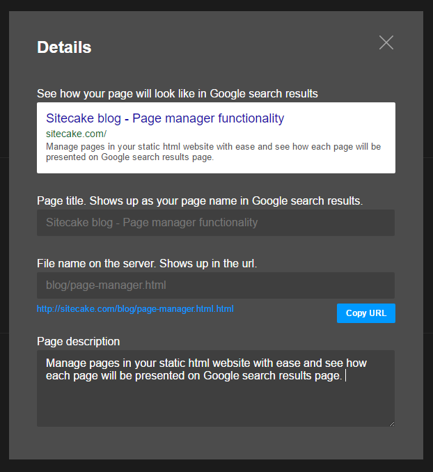

Now one can manage navigation, clone pages, delete pages, do basic on-site SEO and instantly see how the page looks in Google snippet.
NOTE: Page manager is accessed when you press P key on the keyboard while editing the website. Exit with ESC. In final release we will add toolbar button for it.
Indirectly, page manager update enables Sitecake as a static cms to become a light blogging engine. A blogging engine for a static, flat-file, html blog. And static websites bring some new things on the plate:
I will create a separate blog post to elaborate on static websites and a cms for static websites topic.
So, right now you can create a home page and a blog article page and then use page manager to clone the article page for each new post. Link new articles from main menu or any on page list and you have your blog.
<ul>
<li><a href="">Home</a></li>
<li><a class="" href="/about.html">About</a></li>
<li><a class="" href="/portfolio.html">Portfolio</a></li>
<li><a class="" href="/contact.html">Contact</a></li>
</ul>
There is an option to customize that HTML to whatever you want to use, just that I will leave that for another post.
Basic on-page SEO